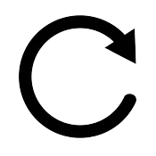

Data Version:
(last download:
)

Filters
Select Folder
Add Filter
Settings for Automatic Suggestions
Select one (or more) fragments and adjust settings to query for most similar objects regarding given features.
Triplet Space
Colour Space
min Δ
avg Δ
Calculate Distances Δ
Reset Sorting
TPOP Fragments
<
>
Selected
<
>
Cancel
Select fragments
Detail Information
Fragment not contained in filtered fragment list
Recto
Verso
Registered Joins
Add All
Remove All
Select a New Filter Criterion:
Filter Attribute
Operator
contains
contains not
empty
not empty
Filter Value
Apply Filter
x